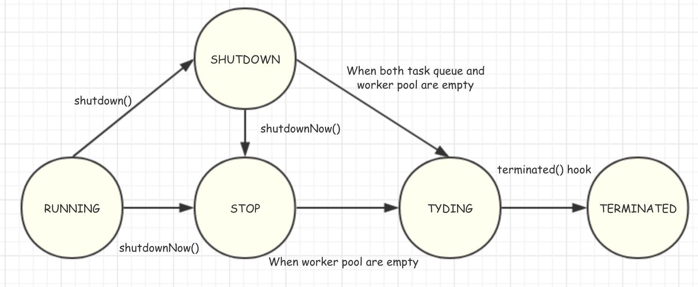

Java ThreadPoolExecutor源代码分析
线程池通常是为了节省系统资源，重复利用已经存在的线程来运行任务，效率高又节省资源。因为，线程本身的新建和销毁都是有成本的。
ThreadPoolExecutor 是JDK自带的线程池实现，通常我们不会直接使用这个类，而是会使用Executors这个工厂方法类来快速构建一个即用的线程池。只有当需要定制线程池的各种参数时才会使用该类的构造函数来实例化。
内部实现的整体结构
BlockQueue来存储暂时不能运行的任务。而线程池的大小由参数指定，并且可以自动调节（非fixed sized的情况）。线程的创建则是委托给指定的ThreadFactory，从而提供给开发者足够的灵活性。
可调节的参数
corePoolSize: 核心线程数。线程池在运行状态下的典型线程个数maximumPoolSize: 最大允许线程数keepAliveTime: 线程闲置时间。线程在空闲时间超过该值时就会被销毁threadFactory: 创建线程的工厂方法rejectedExcutionHandler: 拒绝执行任务的handlerworkQueue: 任务队列。如果提供这个参数，线程池将从这里获取可运行的任务；否则会自动创建一个BlockQueue
线程池的几种状态
从源代码中可以看到，线程池可以存在以下五种状态：
RUNNING: 线程池正常运行中，接收新的任务，同时处理任务队列里的任务SHUTDOWN: 调用了shutdown或者shutdownNow后，线程池接受新提交的任务，但是还需要处理任务队列里的已提交任务STOP: 不能提交新的任务，也不能处理任务队列里的任务，正在处理的任务会被中断TIDYING: 所有的任务都结束（包括正常结束或者中断）了，线程池中没有worker，马上进入结束阶段，可以运行结束前的hookTERMINATED: 线程池结束
在源代码中，线程池状态由一个数字代替，从上到下依次递增（-1 -> 3）。这样做的好处是：很容易写那些状态的判断的条件，并能和worker数压缩存储（下文会介绍）。 线程池状态的转换如下图：
Worker
ThreadPoolExecutor并不是简单的使用thread直接去运行任务，而是在其上包装了一个Worker类。该类扩展了AbstractQueuedSynchronizer，实现了一个非可重入锁，来保护线程的状态，保证多线程环境下的安全。在需要运行任务时或者需要改变线程的状态时（Interrupt），都需要获取相应的锁。Worker的状态（state）分为三种：小于0,0和1。
- 小于0: worker刚new出来，还未投入使用（进入线程池）
- 等于0: 投入使用，并且处于未上锁状态，可以运行任务
- 大于0: 投入使用，并且被上锁，可能被其他任务占用着
因此，线程池其实是worker池。在源代码中，所有的worker存在一个HashSet中，其访问由锁保护。 本文中可能交叉使用线程和worker两种说法。
线程安全的保证
ThreadPoolExecutor是一个线程安全的实现：当在多线程环境下使用时，能够保证正确且高效的使用。它是通过以下几个手段来完成的：
mainLock访问任意的worker及其相关的参数都需要获取该锁- 构造函数中的所有重要的参数，都使用
volatile修饰，保证任何线程（worker）看到的都是最新的状态 ctl: 源代码中将线程池的状态和线程池中的worker数目整合到一个ActomicInteger中，这样避免使用锁来保护线程池的状态
ctl的高位3个bit用来存储线程池的整体状态，后面29位用来存储线程池的worker个数。源代码中提供了便捷方法用来单独访问每个参数，比如runStateOfworkerCountOf等。
线程池的常用操作分析
下面来我们分析一下线程池的几种常用操作的实现。
1. execute操作
向线程池提交一个任务。提交的任务会使用已经存在的某个线程或者新创建一个线程来处理。当条件不允许接收新的任务时（线程池容量达到上限或者线程池处于关闭状态），则使用拒绝策略来处理。
public void execute(Runnable command) {
if (command == null)
throw new NullPointerException();
int c = ctl.get();
if (workerCountOf(c) < corePoolSize) { // 如果当前线程数量小于corePoolSize，直接以该任务试图添加一个新的线程，
if (addWorker(command, true))
return;
c = ctl.get();
}
if (isRunning(c) && workQueue.offer(command)) { // 否则，将任务加入等待队列
int recheck = ctl.get();
if (! isRunning(recheck) && remove(command)) // ？需要double check，防止线程池在添加进等待队列后，又进入了关闭状态
reject(command);
else if (workerCountOf(recheck) == 0) // 线程池可能长时间没有任务，导致没有存活的worker
addWorker(null, false);
}
else if (!addWorker(command, false)) // 试图增加线程池的大小，来运行当前任务
reject(command);
}
由于，在线程池关闭后，会进行一系列清洗工作，所以，不是很懂上面代码中打问号那行的判断。感觉不是很有必要。
从上面的代码可以看出，主要的实现逻辑应该在addWorker部分。
private boolean addWorker(Runnable firstTask, boolean core) {
// 第一部分：试图判断线程池状态，并增加线程数。因为其保存在同一个原子变量中
retry:
for (;;) {
int c = ctl.get();
int rs = runStateOf(c);
// 检查线程池的状态，是否已经SHUTDOWN。当处于SHUTDOWN时，只有等待队列中还有未完成的任务，并且不是新提交的任务：firstTask==null时，才可以添加新的worker
if (rs >= SHUTDOWN && !(rs == SHUTDOWN && firstTask == null && !workQueue.isEmpty()))
return false;
for (;;) {
int wc = workerCountOf(c);
if (wc >= CAPACITY || wc >= (core ? corePoolSize : maximumPoolSize)) // 这里直接可以判断后面的条件。判断是否超过CAPACITY是为了效率考虑，提早短路
return false;
if (compareAndIncrementWorkerCount(c)) // 试图增加work counter，如果成功，跳出循环
break retry;
c = ctl.get(); // Re-read ctl
if (runStateOf(c) != rs) // 如果失败，则判断线程状态是否发生变化，如果没有发生变化，则只能是由于线程数量发生变化，则进入内循环；如果发生变化，则进入外循环
continue retry;
}
}
// 第二部分：增加新的worker，并开始
boolean workerStarted = false;
boolean workerAdded = false;
Worker w = null;
try {
w = new Worker(firstTask);
final Thread t = w.thread;
if (t != null) { // ThreadFactory 有可能由于某种原因无法创建新线程
final ReentrantLock mainLock = this.mainLock; // 该锁用来保护对workders和largestPoolSize的访问
mainLock.lock();
try {
int rs = runStateOf(ctl.get());
if (rs < SHUTDOWN || (rs == SHUTDOWN && firstTask == null)) {
if (t.isAlive()) // precheck that t is startable
throw new IllegalThreadStateException();
workers.add(w);
int s = workers.size();
if (s > largestPoolSize)
largestPoolSize = s;
workerAdded = true;
}
} finally {
mainLock.unlock();
}
if (workerAdded) {
t.start();
workerStarted = true; // 如果上步操作未出错，则启动成功
}
}
} finally {
if (! workerStarted)
addWorkerFailed(w); // 回滚之前的操作
}
return workerStarted;
}